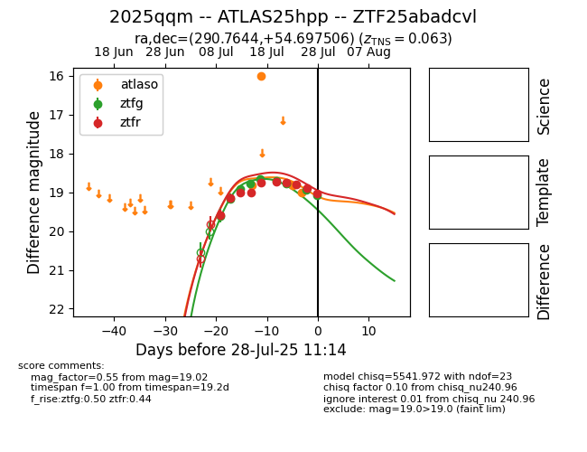

Target 2025qqm at 2025-07-28 11:14, see:
FINK: fink-portal.org/2025qqm
Lasair: lasair-ztf.lsst.ac.uk/objects/2025qqm
ALeRCE: alerce.online/object/2025qqm
TNS: wis-tns.org/object/2025qqm
YSE: ziggy.ucolick.org/yse/transient_detail/2025qqm
alt names
ZTF25abadcvl (ztf,fink)
2025qqm (tns,yse)
ATLAS25hpp (atlas)
coordinates:
equatorial (ra, dec) = (290.7644,+54.69751)
galactic (l, b) = (86.0392,+17.54173)
photometry
last atlaso=19.00, ztfg=19.08, ztfr=19.02
4 atlaso, 9 ztfg, 10 ztfr detections
